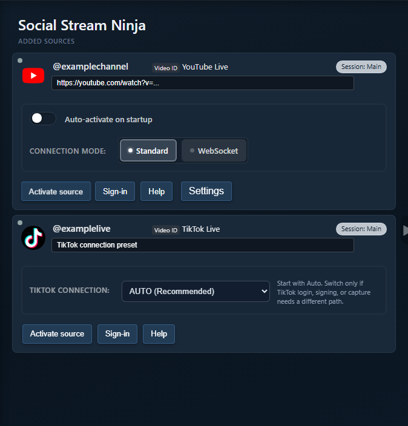

从简单开始
在桌面应用中添加 TikTok，预设保持 Auto，除非正在排查特定故障。

模式选择器
| 模式 | 适用情况 | 注意事项 |
|---|---|---|
| 自动 | 正常的首次设置。 | 应用可能依次进入不同回退状态。 |
| 标准 | 您需要可见页面捕获或手动登录/验证。 | 重定向、验证码、聊天隐藏或直播 URL 错误。 |
| 本地签名器 | 您需要应用原生读取或支持回复的路径。 | 应用内的 TikTok 会话/Cookie 必须有效。 |
| 兼容模式（WebSocket） | 用于尝试兼容连接器的设置。 | 以前称为 Polling。当前应用中仍需签名，且无法回复。请参阅 签名指南. |
| 代理/自定义签名 | 需要提供商/API 密钥的高级设置。 | 提供商限制、房间 ID、签名错误和速率限制。 |
失败时收集哪些信息
- 桌面应用版本，以及是否启用 Beta 模式。
- 当前选中的 TikTok 预设/模式。
- 确切的应用状态文本或错误消息。
- 是否已在应用内登录 TikTok 账号。
- Standard 模式下，直播页面上的聊天是否可见。
- 测试 OBS 之前，停靠面板是否收到任何内容。
检查支持的网站
如需浏览器扩展的基本 TikTok 设置，请先使用公开的 TikTok 设置说明。